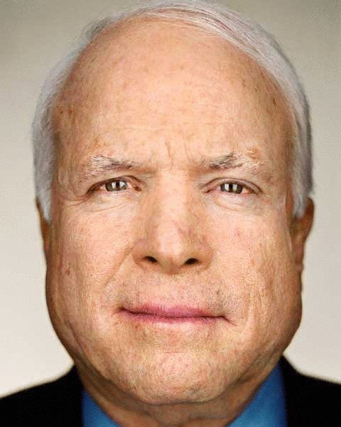
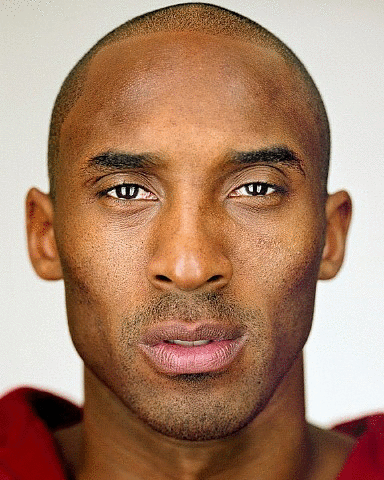

Project Five: Image Morphing
CS 194-26: Computational Photography | Krishna Parashar
Background: Image Morphing
For this assignment I sought to write an program to morph two images together. The morph was described by two factors: warping the shape of the images and cross-dissolving the colors. I primary used only faces for my morphs shown here, but other images could be used as well. I also took a dataset and averaged the prototypical member of the dataset
Implementation
The first step to Morphing is to specify corresponding points between the two images. As suggested in the class, I used 43 points that focused on the facial features (eyes, nose, mouth, and ears) and the facial structure. This ended up working out pretty well. After tediously and manually specifying the amounts, I made sure the save them as text files so I could reuse the points. After these (equal number of) points (for the same size images) are specified, the program then found a Delaunay triangulation (using the scipy library) on the average of the points. An appropriate affine transformation was then computed for morphing the points in each image into the points in the average image using the triangulations. Because a set of these matrices required an inverse warp, a mask was used (from the scikit image library). From all this the warped images and the average image were outputted.
Morphs
I ended up using images from Martin Schoeller beautifully minimalist photos of famous people. The provided the optimum size, background, and composure similarity. As a result the morphs turned out beautifully.

Barrack Obama |

Average Image |

John McCain |
|
Barack Obama |

Morphing GIF |
John McCain |

Brad Pitt |

Morphing GIF |

Kobe Bryant |
Mean Face of Populace
I used the Danes dataset, particularly the ones of them smiling. We averaged thirty seven images of both the males and females to create the mean face (really anything but, they are all smiling) shown below. The face looks more masculine due to the majority of photos being men.

|

|

|

Caricatures
I also messed around with my own face, choosing values that would morph me into a Dane (oh how I have always wanted in to fit in in Denmark). However as is expected, I look pretty terrible.
|
The Great Average Dane |

Me |

Basically Me (0.1 Distortion) |

About Average (0.6 Distortion) |

Too Much Dane (1.1 Distortion) |